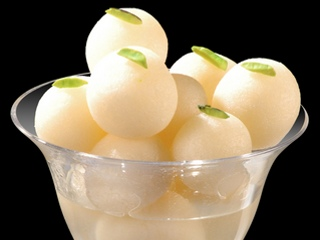

MEETHEY RASGULLE: "AA GAYA NA MUH MAI PANNI"
Sample Question Paper 2016 – 17
Science
Class – X (SA – II)
Time allowed: 03 Hours Maximum Marks: 90
General Instructions:
(i) The question paper comprises two sections, A and B. You are to attempt both the sections.
(ii) All questions are compulsory.
(iii) There is no choice in any of the question.
(iv) All questions of Section-A and B are to be attempted separately.
(v) Question numbers 1 to 3 in Section-A are one mark question. They are to be answered in one word
or in one sentence.
(vi) Question numbers 4 to 6 in Section- A are two marks questions. These are to be answered in 30
words each.
(vii) Question numbers 7 to 18 in Section-A are three marks questions. These are to be answered in
about 50 words each.
(viii) Question numbers 19 to 24 in Section-A are 5 marks questions. These are to be answered in 70
words each.
(ix) Question numbers 25 to 33 in Section- B are multiple choice questions based on practical skills.
Each question is a one mark question. You are to select one most appropriate response out of the
four provided to you.
(x) Question numbers 34 to 36 in Section B are two marks questions based on practical skills. These
are to be answered in brief.
Section A
1 Name the process of converting vegetable oil to vegetable ghee. 1
2 List two secondary sexual characters of males that are different from that of
females.
1
3 Write the main function of Ozone in the upper atmosphere 1
4 When a concave mirror is placed facing the Sun, the Sun’s rays converge to a point
10 cm from the mirror. Now, if you place a 2 cm long candles flame 20 cm away on
the principal axis of the mirror, where would you place a screen to obtain the image
of the candle? What would see the size of the image? Draw a ray diagram to justify
your answer.
2
5 If you find coliform bacteria in a sample of water collected from a river, what would
you conclude? Give reason for such kind of water pollution.
2
6 Which natural resources are called the “biodiversity hot spots”? How these hot spots
maintain ecological balance?
2
7 What are isomers? “Isomers of the first three members of alkane series are not
possible”. Give reason to justify this statement and draw structures of two isomers of
butane, C4 H10.
3
8 An organic compound ‘X’ is a liquid at room temperature. It is also a very good
solvent and has the molecular formula C2 H6 O. on oxidation ‘X’ gives ‘Y’ which give,
break effervescence on reacting with NaHCO3. X reacts with Y in the presence of
conc.H2SO4to give another compound ‘Z’ which has a pleasant smell. Identify X, Y
3
and Z. also write chemical equations to show the formation of Y and Z.
9 An element ‘A’ belongs to 3rd period and 17th group of the periodic table.
a) Write atomic member and electronic configuration of ‘A’
b) State whether A is a metal or a non – metal.
c) Write the nature of bond formed if A reacts with another element B of
electronic configuration 2, 8, 1.
d) Write the chemical formula of the compound formed.
3
10 Consider the following elements
4Be, 9F, 19K, 20Ca
a) Select the element having one election in the outer most shell.
b) Select two elements of the same group.
c) Write the formula and state the nature of the Compound formed when the
element K reacts with an element X of electronic configuration 2, 8, 7.
3
11 Explain with the help of labelled diagrams the development that takes place in each
of the body parts of a Planaria where body is cut into three pieces. None this
process and give an example of an organism in which a similar process can be
observed.
3
12 List any four methods of contraception used by humans. How does the use of three
methods have a direct effect on the heath and prosperity of a family?
3
13 List two functions each of the following points of human female reproductive system
a) Ovaries
b) Fallopian tubes
c) Uterus
3
14 “Different species use different strategies to determine sex of a new born individual.
It can be environmental cues or genetically determined”. Justify this statement giving
reason/example.
3
15 List in tabular form, two distinguishing features between the acquired traits and the
inherited traits with one example of each.
3
16 A student has to project a three times magnified image of a candle flame on a wall.
Name the type of the lens (converging/ diverging) required for the purpose. It the
candle flame is at a distance of 6 m from the wall, find the focal length of the lens.
3
17 A child while playing with his father’s spectacles burnt a hole in a piece of them
tissue paper by focusing the image of the Sun on at.
a) Name the defect of vision his father is suffering form.
b) List two causes of the defect.
c) Draw a ray diagram to show how this defect may be corrected using a
suitable lens.
3
18 Some residents of your colony are planning to cut trees to create a place for
parking vehicles. You are upset by knowing all this and wanted to do something to
create awareness about the importance of trees.
(a) List any three reasons that you will use to convince residents of your colony not
to cut the existing trees.
(b) List any three values that would be inculcated amongst them with such
approach.
3
19 a) State two main reasons for carbon forming a very large number of
compounds.
b) Give reason why carbon forms compound
(i) Namely by Covalent bonding
(ii) Having low melting and boiling points
c) What happens when (Write chemical equations of the reactions)
(i) A piece of sodium metal is added to ethanol.
(ii) Ethanoic acid reacts with sodium hydroxide.
5
20 A. Draw a longitudinal section of a flower and label the following parts –
a) Part that develops into a fruit
b) Part that produces pollen grain
c) Part that transfers male gametes
d) Part that is sticky to trap
B. Write the names of the parts labeled as A, B, C, D in the diagram given below:
5
21 A. How does speciation take place?
B. Define the term GENE.
C. The gene for red hair is recessive to the gene for black hair. What will be the
hair colour of a child if he inherits a gene for red colour from his mother and a
gene for black hair from his father? Express with the help of flow chart.
5
22 A. Explain the formation of rainbow in the sky with the help of a diagram. List the
three phenomena of light involved. Which colour – violet or red appears at top
of the rainbow?
B. What is the difference in colours of the sun observed during sunrise/sunset and
noon? Give explanation for each.
5
23 (i) Which property of concave mirror is utilized for using them as shaving mirrors?
(ii) Light passes through a rectangular glass slab and through a triangular glass
prism. Using proper ray diagram, explain in what way does the direction of the
two emergent beams differs with respect to the incident beam of light.
(iii) A concave lens has a focal length of 50 cm Calculate its power.
5
24 (i) Rohit claims to have obtained an image twice the size of object with a concave
lens. Is he correct? Give reason for your answer.
(ii) Where should an object be placed in case of a convex lens to form an image of
same size as of the object? Show with the help of ray diagram the position and
the nature of the image formed.
(iii) With the help of ray diagram, illustrate the change in position, nature and size
of the image formed if the convex lens in case of (ii) is replaced by concave
lens of same focal length.
5
Section B
25 In the preparation of soap, sodium chloride causes:
(a) complete saponification.
(b) complete hydrolysis.
(c) complete neutralization.
(d) complete precipitation.
1
26 Vishakha carried out saponification reaction in the lab and she gave following
comments as:
(i) Soap is salt of fatly acid.
(ii) Heat is absorbed in this reaction.
(iii) Reaction mixture is basic in nature
(iv) These are neutralization reaction
The correct statements are:
(a) (i) & (iii)
(b) (ii) & (iv)
(c) (i) & (ii)
(d) (i), (ii) & (iii)
1
27 Select from the following salts which may be used to prepare hard water required for
the experiment.
A. CaSO4 B. Na2SO4 C. CaCl2
D. K2SO4 E. NaHCO3 F. MgCl2
1. A, B and D
2. A, C and F
3. B, D and E
4. C, E and F
1
28
Four students A,B,C and D did their experiment of finding the focal length of convex
lens by obtaining image of a distant object as follows:
? Student A used the window grill in the laboratory as the object and a white
paper sheet held in hand as the screen.
? Student B used a distant tree in the shade and a white thick held in a stand
as the screen.
? Student C used a well illuminated laboratory window grill as the object and a
white paper sheet held in a stand as the screen.
? Student D used a well illuminated distant tree as the object and a white thick
board held in a stand as the screen.
Which student has used the correct method for performing experiment out of the
above setups?
(a) A (b) B (c) C (d) D